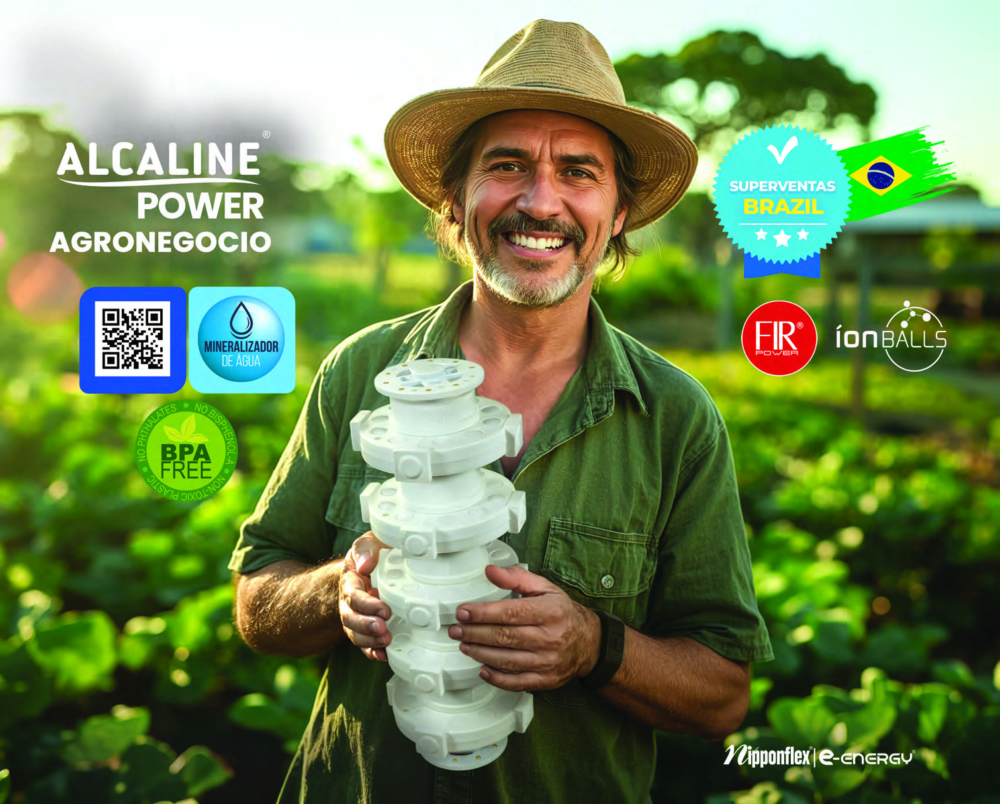
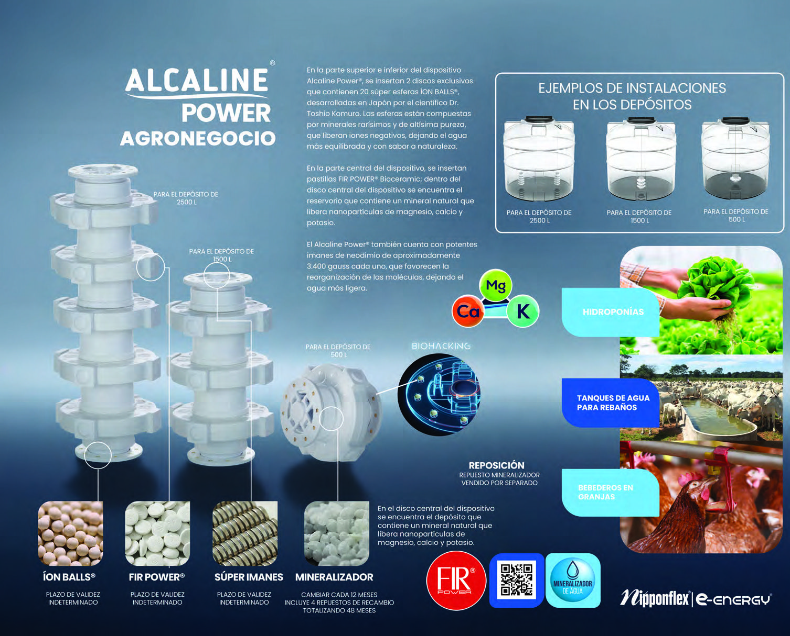

Mejora de las condiciones productivas en agricultura, hidroponía y ganadería a través de tecnologías basadas en infrarrojo lejano (FIR), contribuyendo a la optimización de la calidad del agua y al fortalecimiento de los procesos biológicos naturales.

Tecnología diseñada para potenciar las propiedades del agua, promoviendo una mejor hidratación, absorción de nutrientes y rendimiento en sistemas agropecuarios.